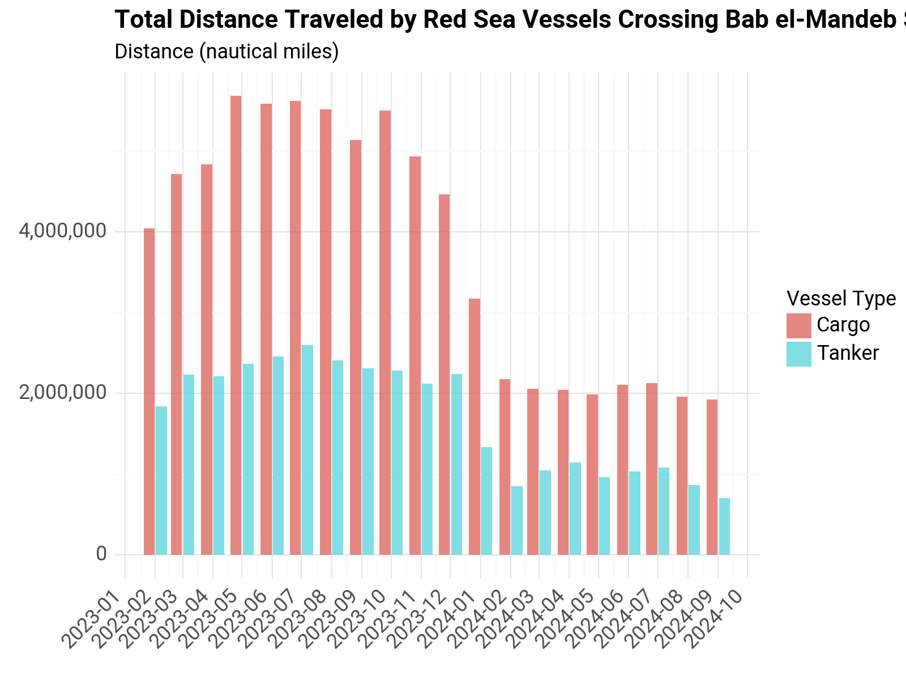
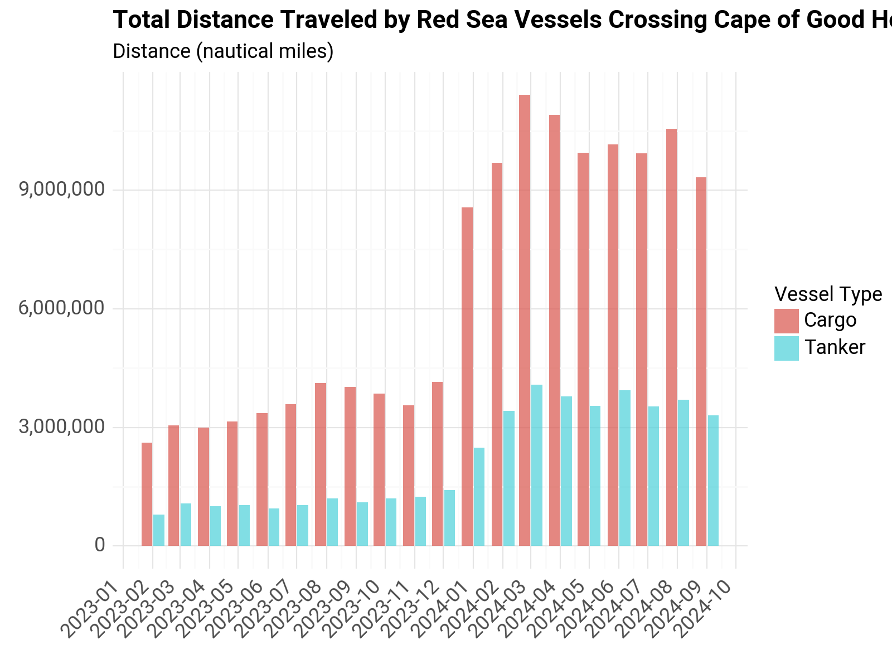
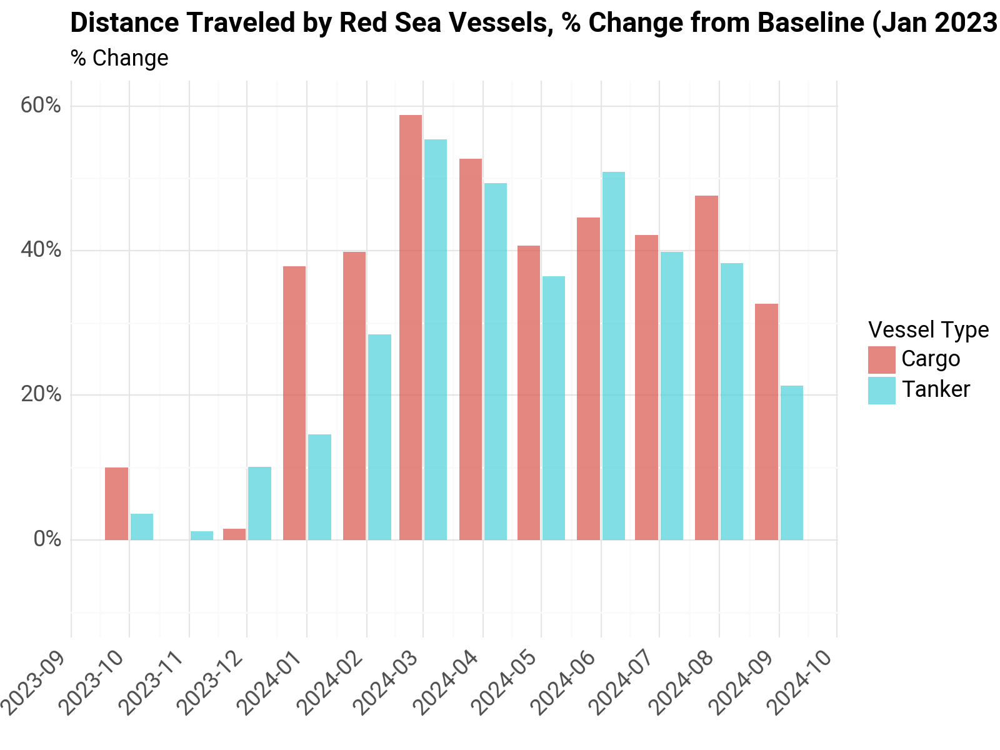
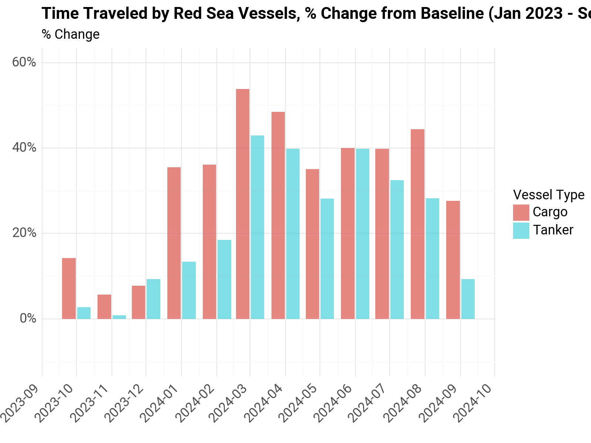
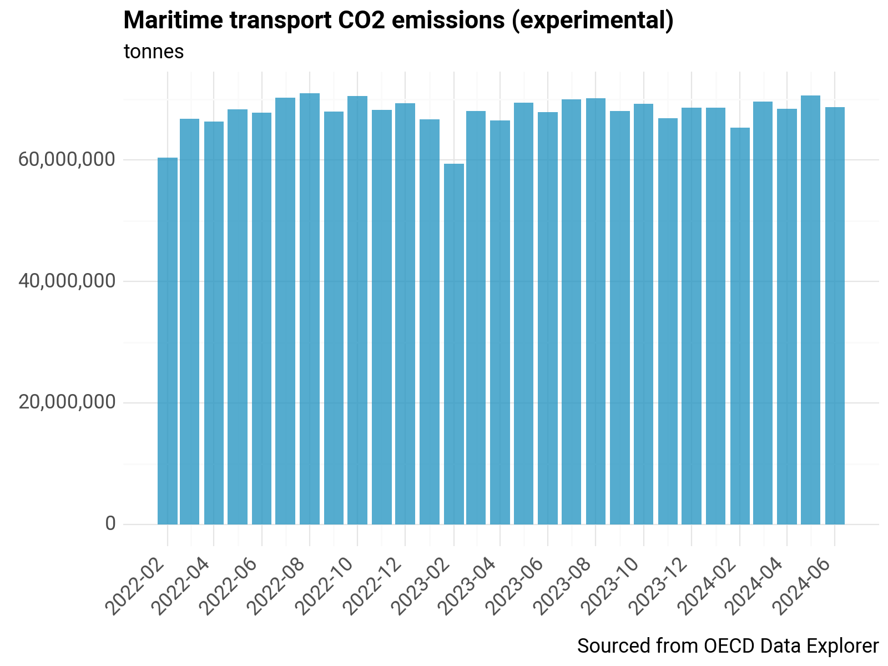
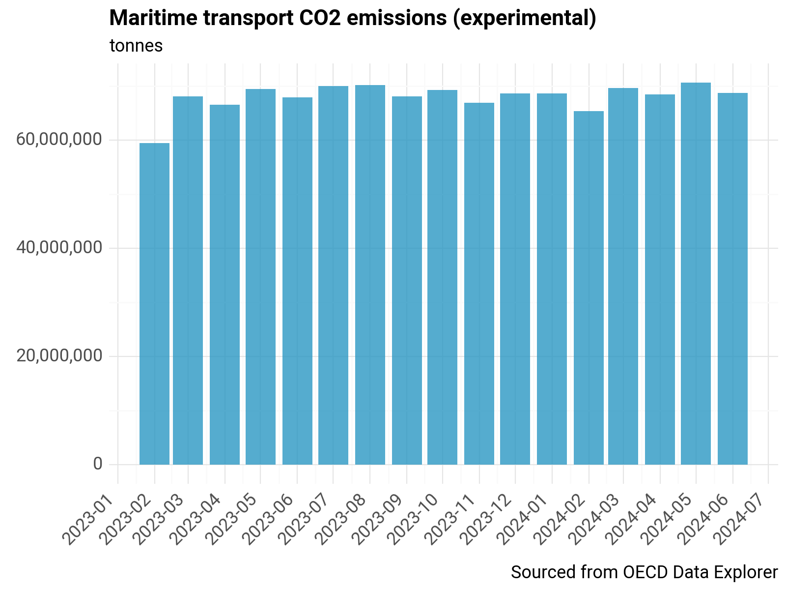

Data Analysis#
Setup#
import os
from os.path import join, expanduser
from datetime import datetime
import pandas as pd
import git
git_repo = git.Repo(os.getcwd(), search_parent_directories=True)
git_root = git_repo.git.rev_parse("--show-toplevel")
# For plotting
from plotnine import *
from mizani.breaks import date_breaks
from mizani.formatters import date_format, comma_format, percent_format
import plotnine
# plotnine.options.figure_size = (10, 8)
plotnine.options.figure_size = (5, 4)
output_dir = (
r"C:\Users\WB514197\WBG\Development Data Partnership - Red Sea Maritime Monitoring"
)
charts_dir = join(git_root, "reports")
df = pd.read_parquet(join(expanduser("~"), "tmp", "ais", "portcalls_v5.parquet"))
len(df)
2508132
df.arrival_dt_pos_utc = pd.to_datetime(df.arrival_dt_pos_utc)
df = df.loc[df.arrival_dt_pos_utc >= "2023-02-01"].copy()
df_ref = df.loc[df.arrival_dt_pos_utc < "2023-10-01"].copy()
# df = pd.read_csv(join(expanduser("~"), 'tmp', 'ais', 'G_sea_routes_edges.csv'), index_col=0)
# df.head(10).to_csv(join(expanduser("~"), 'tmp', 'ais', 'G_sea_routes_edges_sample.csv'))
Get Vessels that crossed Red Sea in Reference Period#
aois = ["Bab el-Mandeb Strait", "Suez Canal"]
df_sel = df.loc[(df.prev_port.isin(aois)) | (df.Port.isin(aois))].copy()
unique_vessels_red_sea = list(set(df_sel.unique_id))
unique_vessels = list(set(df.unique_id))
len(unique_vessels_red_sea) / len(unique_vessels)
0.10340864018649981
df2 = df.loc[df.unique_id.isin(unique_vessels_red_sea)].copy()
len(df2) / len(df)
0.15950639438381506
Select only Cargo and Tanker for reporting
# df2.vessel_type.value_counts()
types_sel = ["Cargo", "Tanker"]
df2 = df2[df2["vessel_type"].isin(types_sel)].copy()
len(df2) / len(df)
0.1506177092912103
Filter out short trips
df2 = df2.loc[df2.time_travel > 1].copy()
df2.loc[:, "ymd"] = df2.apply(
lambda x: datetime(year=x["year"], month=x["month"], day=1), axis=1
)
df_cape = df2.loc[
(df2.Port == "Cape of Good Hope") | (df2.prev_port == "Cape of Good Hope")
].copy()
df_bab = df2.loc[
(df2.Port == "Bab el-Mandeb Strait") | (df2.prev_port == "Bab el-Mandeb Strait")
].copy()
df3 = pd.concat([df_cape, df_bab])
df3.reset_index(drop=False, inplace=True)
df3 = df3.loc[~df3.duplicated(subset="index")].copy()
group_cols = ["ymd", "vessel_type"]
data_cols = ["time_travel", "distance"]
df_agg = df3.groupby(group_cols)[data_cols].sum().reset_index()
df_agg_cape = df_cape.groupby(group_cols)[data_cols].sum().reset_index()
df_agg_bab = df_bab.groupby(group_cols)[data_cols].sum().reset_index()
# plotnine.options.figure_size = (10, 8)
# plotnine.options.figure_size = (5, 4)
plotnine.options.figure_size = (8, 6)
p0 = (
ggplot(df_agg, aes(x="ymd", y="distance", fill="vessel_type")) #
+ geom_bar(
alpha=3 / 4,
stat="identity",
position="dodge2",
)
+ labs(
x="",
y="",
subtitle="Distance (nautical miles)",
title="Total Distance Traveled by Red Sea Vessels",
# caption="This chart shows the monthly total distance traveled by a subset of vessels that were identified to cross the Red Sea in a reference period \n(January 2023 through October), and have either crossed the Bab el-Mandeb Strait or the Cape of Good Hope in the period of interest.",
fill="Vessel Type",
)
+ theme_minimal()
+ scale_y_continuous(labels=comma_format())
+ scale_x_datetime(breaks=date_breaks("1 month"), labels=date_format("%Y-%m"))
+ theme(
text=element_text(family="Roboto", size=13),
plot_title=element_text(family="Roboto", size=16, weight="bold"),
axis_text_x=element_text(rotation=45, hjust=1),
legend_position="right",
)
)
display(p0)
p0.save(filename=join(charts_dir, "routes", "distance-traveled.jpeg"), dpi=300)

<Figure Size: (800 x 600)>
c:\WBG\Anaconda3\envs\rtmis\Lib\site-packages\plotnine\ggplot.py:587: PlotnineWarning: Saving 8 x 6 in image.
c:\WBG\Anaconda3\envs\rtmis\Lib\site-packages\plotnine\ggplot.py:588: PlotnineWarning: Filename: C:/Users/WB514197/Repos/red-sea-monitoring\reports\routes\distance-traveled.jpeg
p0 = (
ggplot(df_agg, aes(x="ymd", y="distance", fill="vessel_type")) #
+ geom_bar(
alpha=3 / 4,
stat="identity",
position="dodge2",
)
+ labs(
x="",
y="",
subtitle="Distance (nautical miles)",
title="Total Distance Traveled by Red Sea Vessels",
# caption="This chart shows the monthly total distance traveled by a subset of vessels that were identified to cross the Red Sea in a reference period \n(January 2023 through October), and have either crossed the Bab el-Mandeb Strait or the Cape of Good Hope in the period of interest.",
fill="Vessel Type",
)
+ theme_minimal()
+ scale_y_continuous(labels=comma_format())
+ scale_x_datetime(breaks=date_breaks("1 month"), labels=date_format("%Y-%m"))
+ theme(
text=element_text(family="Roboto", size=13),
plot_title=element_text(family="Roboto", size=16, weight="bold"),
axis_text_x=element_text(rotation=45, hjust=1),
legend_position="right",
)
)
display(p0)
p0.save(filename=join(charts_dir, "routes", "distance-traveled.jpeg"), dpi=300)
<Figure Size: (800 x 600)>
c:\WBG\Anaconda3\envs\rtmis\Lib\site-packages\plotnine\ggplot.py:587: PlotnineWarning: Saving 8 x 6 in image.
c:\WBG\Anaconda3\envs\rtmis\Lib\site-packages\plotnine\ggplot.py:588: PlotnineWarning: Filename: C:/Users/WB514197/Repos/red-sea-monitoring\reports\routes\distance-traveled.jpeg
p1 = (
ggplot(df_agg_bab, aes(x="ymd", y="distance", fill="vessel_type")) #
+ geom_bar(
alpha=3 / 4,
stat="identity",
position="dodge2",
)
+ labs(
x="",
y="",
subtitle="Distance (nautical miles)",
fill="Vessel Type",
title="Total Distance Traveled by Red Sea Vessels Crossing Bab el-Mandeb Strait",
# caption="This chart shows the monthly total distance traveled by a subset of vessels that were identified to cross the Red Sea in a reference period \n(January 2023 through October), and have crossed the Bab el-Mandeb Strait",
)
+ theme_minimal()
+ scale_y_continuous(labels=comma_format())
+ scale_x_datetime(breaks=date_breaks("1 month"), labels=date_format("%Y-%m"))
+ theme(
text=element_text(family="Roboto", size=13),
plot_title=element_text(family="Roboto", size=16, weight="bold"),
axis_text_x=element_text(rotation=45, hjust=1),
legend_position="right",
)
)
display(p1)
p1.save(filename=join(charts_dir, "routes", "distance-traveled-bab.jpeg"), dpi=300)

{kind=link}
<Figure Size: (800 x 600)>
c:\WBG\Anaconda3\envs\rtmis\Lib\site-packages\plotnine\ggplot.py:587: PlotnineWarning: Saving 8 x 6 in image.
c:\WBG\Anaconda3\envs\rtmis\Lib\site-packages\plotnine\ggplot.py:588: PlotnineWarning: Filename: C:/Users/WB514197/Repos/red-sea-monitoring\reports\routes\distance-traveled-bab.jpeg
p3 = (
ggplot(df_agg_cape, aes(x="ymd", y="distance", fill="vessel_type")) #
+ geom_bar(
alpha=3 / 4,
stat="identity",
position="dodge2",
)
+ labs(
x="",
y="",
subtitle="Distance (nautical miles)",
fill="Vessel Type",
title="Total Distance Traveled by Red Sea Vessels Crossing Cape of Good Hope",
# caption="This chart shows the monthly total distance traveled by a subset of vessels that were identified to cross the Red Sea in a reference period \n(January 2023 through October), and have crossed the Cape of Good Hope",
)
+ theme_minimal()
+ scale_y_continuous(labels=comma_format())
+ scale_x_datetime(breaks=date_breaks("1 month"), labels=date_format("%Y-%m"))
+ theme(
text=element_text(family="Roboto", size=13),
plot_title=element_text(family="Roboto", size=16, weight="bold"),
axis_text_x=element_text(rotation=45, hjust=1),
legend_position="right",
)
)
display(p3)
p3.save(filename=join(charts_dir, "routes", "distance-traveled-cape.jpeg"), dpi=300)

{kind=link}
<Figure Size: (800 x 600)>
c:\WBG\Anaconda3\envs\rtmis\Lib\site-packages\plotnine\ggplot.py:587: PlotnineWarning: Saving 8 x 6 in image.
c:\WBG\Anaconda3\envs\rtmis\Lib\site-packages\plotnine\ggplot.py:588: PlotnineWarning: Filename: C:/Users/WB514197/Repos/red-sea-monitoring\reports\routes\distance-traveled-cape.jpeg
Data Table#
group_cols = [
"year",
"month",
"vessel_type",
"Country",
"Port",
"prev_country",
"prev_port",
]
data_cols = ["time_travel", "distance"]
df_agg_od = (
df3.groupby(group_cols)
.aggregate({"time_travel": "sum", "distance": "sum", "unique_id": "count"})
.reset_index()
)
df_agg_od.rename(
columns={
"unique_id": "No. of Vessels",
"prev_port": "Previous Port",
"prev_country": "Previous Country",
"vessel_type": "Vessel Type",
"time_travel": "Total travel time (hrs.)",
"distance": "Total distance (n. miles)",
"count_routes": "No. of Vessels",
},
inplace=True,
)
df_agg_od = df_agg_od[
[
"year",
"month",
"Vessel Type",
"Previous Port",
"Previous Country",
"Country",
"Port",
"Total travel time (hrs.)",
"Total distance (n. miles)",
"No. of Vessels",
]
].copy()
df_agg_od.head()
| year | month | Vessel Type | Previous Port | Previous Country | Country | Port | Total travel time (hrs.) | Total distance (n. miles) | No. of Vessels | |
|---|---|---|---|---|---|---|---|---|---|---|
| 0 | 2023 | 2 | Cargo | Cape of Good Hope | Chokepoint Cape of Good Hope | Angola | Luanda | 338.479167 | 4844.855522 | 3 |
| 1 | 2023 | 2 | Cargo | Cape of Good Hope | Chokepoint Cape of Good Hope | Argentina | Campana | 1284.538333 | 7714.825095 | 2 |
| 2 | 2023 | 2 | Cargo | Cape of Good Hope | Chokepoint Cape of Good Hope | Argentina | Puerto Ingeniero White | 435.671389 | 4088.880729 | 1 |
| 3 | 2023 | 2 | Cargo | Cape of Good Hope | Chokepoint Cape of Good Hope | Argentina | Rosario | 2431.078889 | 23688.201240 | 6 |
| 4 | 2023 | 2 | Cargo | Cape of Good Hope | Chokepoint Cape of Good Hope | Argentina | San Nicolas | 915.360000 | 7878.375107 | 2 |
print(df_agg_od.head().to_markdown())
| | year | month | Vessel Type | Previous Port | Previous Country | Country | Port | Total travel time (hrs.) | Total distance (n. miles) | No. of Vessels |
|---:|-------:|--------:|:--------------|:------------------|:-----------------------------|:----------|:-----------------------|---------------------------:|----------------------------:|-----------------:|
| 0 | 2023 | 2 | Cargo | Cape of Good Hope | Chokepoint Cape of Good Hope | Angola | Luanda | 338.479 | 4844.86 | 3 |
| 1 | 2023 | 2 | Cargo | Cape of Good Hope | Chokepoint Cape of Good Hope | Argentina | Campana | 1284.54 | 7714.83 | 2 |
| 2 | 2023 | 2 | Cargo | Cape of Good Hope | Chokepoint Cape of Good Hope | Argentina | Puerto Ingeniero White | 435.671 | 4088.88 | 1 |
| 3 | 2023 | 2 | Cargo | Cape of Good Hope | Chokepoint Cape of Good Hope | Argentina | Rosario | 2431.08 | 23688.2 | 6 |
| 4 | 2023 | 2 | Cargo | Cape of Good Hope | Chokepoint Cape of Good Hope | Argentina | San Nicolas | 915.36 | 7878.38 | 2 |
df_agg_od.to_csv(
join(output_dir, "tables", "red-sea-distance-summary-10-03-2024.csv"), index=False
)
Calculate % Change from Baseline#
conflict_date = "2023-10-07"
crisis_date = "2023-11-17"
df_baseline = df_agg.loc[df_agg.ymd < "2023-10-01"].copy()
df_baseline = df_baseline.groupby(["vessel_type"])[["time_travel", "distance"]].mean()
df_baseline.reset_index(inplace=True)
df_baseline.rename(
columns={"time_travel": "time_travel_ref", "distance": "distance_ref"}, inplace=True
)
df_crisis = df_agg.loc[df_agg.ymd >= "2023-10-01"].copy()
df_crisis = df_crisis.merge(df_baseline, on="vessel_type", how="left")
df_crisis.loc[:, "distance_pct"] = (
df_crisis.distance - df_crisis.distance_ref
) / df_crisis.distance_ref
df_crisis.loc[:, "time_pct"] = (
df_crisis.time_travel - df_crisis.time_travel_ref
) / df_crisis.time_travel_ref
# df_crisis = df_crisis.loc[df_crisis.ymd>='2024-01-01'].copy()
p4 = (
ggplot(df_crisis, aes(x="ymd", y="distance_pct", fill="vessel_type")) #
+ geom_bar(
alpha=3 / 4,
stat="identity",
position="dodge2",
)
+ labs(
x="",
y="",
subtitle="% Change",
fill="Vessel Type",
title="Distance Traveled by Red Sea Vessels, % Change from Baseline (Jan 2023 - Sep 2023)",
# caption="This chart shows the monthly total distance traveled by a subset of vessels that were identified to cross the Red Sea in a reference period \n(January 2023 through October), and have crossed the Cape of Good Hope",
)
+ theme_minimal()
+ scale_y_continuous(labels=percent_format(), limits=(-0.1, 0.6))
+ scale_x_datetime(breaks=date_breaks("1 month"), labels=date_format("%Y-%m"))
+ theme(
text=element_text(family="Roboto", size=13),
plot_title=element_text(family="Roboto", size=16, weight="bold"),
axis_text_x=element_text(rotation=45, hjust=1),
legend_position="right",
)
)
display(p4)
p4.save(filename=join(charts_dir, "routes", "distance-traveled-pct.jpeg"), dpi=300)

{kind=link}
<Figure Size: (800 x 600)>
c:\WBG\Anaconda3\envs\rtmis\Lib\site-packages\plotnine\ggplot.py:587: PlotnineWarning: Saving 8 x 6 in image.
c:\WBG\Anaconda3\envs\rtmis\Lib\site-packages\plotnine\ggplot.py:588: PlotnineWarning: Filename: C:/Users/WB514197/Repos/red-sea-monitoring\reports\routes\distance-traveled-pct.jpeg
p5 = (
ggplot(df_crisis, aes(x="ymd", y="time_pct", fill="vessel_type")) #
+ geom_bar(
alpha=3 / 4,
stat="identity",
position="dodge2",
)
+ labs(
x="",
y="",
subtitle="% Change",
fill="Vessel Type",
title="Time Traveled by Red Sea Vessels, % Change from Baseline (Jan 2023 - Sep 2023)",
# caption="This chart shows the monthly total distance traveled by a subset of vessels that were identified to cross the Red Sea in a reference period \n(January 2023 through October), and have crossed the Cape of Good Hope",
)
+ theme_minimal()
+ scale_y_continuous(labels=percent_format(), limits=(-0.1, 0.6))
+ scale_x_datetime(breaks=date_breaks("1 month"), labels=date_format("%Y-%m"))
+ theme(
text=element_text(family="Roboto", size=13),
plot_title=element_text(family="Roboto", size=16, weight="bold"),
axis_text_x=element_text(rotation=45, hjust=1),
legend_position="right",
)
)
display(p5)
p5.save(filename=join(charts_dir, "routes", "time-traveled-pct.jpeg"), dpi=300)

{kind=link}
<Figure Size: (800 x 600)>
c:\WBG\Anaconda3\envs\rtmis\Lib\site-packages\plotnine\ggplot.py:587: PlotnineWarning: Saving 8 x 6 in image.
c:\WBG\Anaconda3\envs\rtmis\Lib\site-packages\plotnine\ggplot.py:588: PlotnineWarning: Filename: C:/Users/WB514197/Repos/red-sea-monitoring\reports\routes\time-traveled-pct.jpeg
df_crisis_sel = df_crisis.loc[df_crisis.ymd >= "2024-01-01"].copy()
df_crisis_sel.ymd
6 2024-01-01
7 2024-01-01
8 2024-02-01
9 2024-02-01
10 2024-03-01
11 2024-03-01
12 2024-04-01
13 2024-04-01
14 2024-05-01
15 2024-05-01
16 2024-06-01
17 2024-06-01
18 2024-07-01
19 2024-07-01
20 2024-08-01
21 2024-08-01
22 2024-09-01
23 2024-09-01
Name: ymd, dtype: datetime64[ns]
df_crisis_sel.loc[:, "year_month"] = df_crisis_sel.ymd.dt.strftime("%Y-%m")
pct_table = df_crisis_sel.groupby(["year_month", "vessel_type"])[
["distance_pct", "time_pct"]
].mean() # .transpose()
pct_table.reset_index(inplace=True)
cargo_table = pct_table.loc[pct_table.vessel_type == "Cargo"].copy()
tanker_table = pct_table.loc[pct_table.vessel_type == "Tanker"].copy()
cargo_table.drop(columns=["vessel_type"], inplace=True)
tanker_table.drop(columns=["vessel_type"], inplace=True)
cargo_table.set_index("year_month", inplace=True)
tanker_table.set_index("year_month", inplace=True)
cargo_table = cargo_table.transpose()
tanker_table = tanker_table.transpose()
cargo_table.index = ["% Change Distance Travel", "% Change Time Travel"]
tanker_table.index = ["% Change Distance Travel", "% Change Time Travel"]
cargo_table = cargo_table.applymap(lambda x: f"{x:.1%}")
tanker_table = tanker_table.applymap(lambda x: f"{x:.1%}")
C:\Users\WB514197\AppData\Local\Temp\ipykernel_12956\1012980847.py:1: FutureWarning: DataFrame.applymap has been deprecated. Use DataFrame.map instead.
C:\Users\WB514197\AppData\Local\Temp\ipykernel_12956\1012980847.py:2: FutureWarning: DataFrame.applymap has been deprecated. Use DataFrame.map instead.
print(cargo_table.to_markdown())
| | 2024-01 | 2024-02 | 2024-03 | 2024-04 | 2024-05 | 2024-06 | 2024-07 | 2024-08 | 2024-09 |
|:-------------------------|:----------|:----------|:----------|:----------|:----------|:----------|:----------|:----------|:----------|
| % Change Distance Travel | 37.8% | 39.8% | 58.8% | 52.7% | 40.7% | 44.6% | 42.2% | 47.6% | 32.7% |
| % Change Time Travel | 35.5% | 36.1% | 53.8% | 48.5% | 35.1% | 40.0% | 39.8% | 44.4% | 27.7% |
print(tanker_table.to_markdown())
| | 2024-01 | 2024-02 | 2024-03 | 2024-04 | 2024-05 | 2024-06 | 2024-07 | 2024-08 | 2024-09 |
|:-------------------------|:----------|:----------|:----------|:----------|:----------|:----------|:----------|:----------|:----------|
| % Change Distance Travel | 14.6% | 28.4% | 55.4% | 49.4% | 36.5% | 50.9% | 39.8% | 38.2% | 21.3% |
| % Change Time Travel | 13.4% | 18.5% | 43.0% | 39.8% | 28.1% | 39.9% | 32.4% | 28.3% | 9.4% |
OECD Data#
# df = pd.read_csv(join(expanduser("~"), 'tmp', 'ais', 'OECD.SDD.NAD.SEEA,DSD_MARITIME_TRANSPORT@DF_MARITIME_TRANSPORT,1.0+all.csv'))
df = pd.read_csv(
join(
expanduser("~"),
"tmp",
"ais",
"OECD.SDD.NAD.SEEA,DSD_MARITIME_TRANSPORT@DF_MARITIME_TRANSPORT,1.0+.M.EMISSIONS.....ALL_VESSELS_10-03-2024.csv",
)
) # latest
df.Vessel.value_counts()
Vessel
All vessels 3423
Name: count, dtype: int64
df = df.loc[df.FREQ == "M"].copy()
drop_areas = ["W", "OECD", "W_O"]
df = df.loc[~df.REF_AREA.isin(drop_areas)].copy()
df = df[["TIME_PERIOD", "OBS_VALUE", "REF_AREA", "Vessel"]].copy()
df.loc[:, "ymd"] = pd.to_datetime(df["TIME_PERIOD"])
df = df.loc[df.ymd > "2022-01-01"].copy()
df.groupby("REF_AREA").size()
REF_AREA
AGO 29
ALB 29
ARE 29
ARG 29
ATG 15
..
VIR 18
VNM 29
VUT 29
WSM 29
ZAF 29
Length: 116, dtype: int64
df = df.groupby(["TIME_PERIOD", "ymd"])["OBS_VALUE"].sum().reset_index().copy()
df.loc[:, "year_month"] = df.ymd.dt.strftime("%Y-%m")
p0 = (
ggplot(df, aes(x="ymd", y="OBS_VALUE")) #
+ geom_bar(alpha=3 / 4, stat="identity", fill="#1d91c0")
+ labs(
x="",
y="",
subtitle="tonnes",
title="Maritime transport CO2 emissions (experimental)",
caption="Sourced from OECD Data Explorer",
)
+ theme_minimal()
+ scale_y_continuous(labels=comma_format())
+ scale_x_datetime(breaks=date_breaks("2 month"), labels=date_format("%Y-%m"))
+ theme(
text=element_text(family="Roboto", size=13),
plot_title=element_text(family="Roboto", size=16, weight="bold"),
axis_text_x=element_text(rotation=45, hjust=1),
legend_position="none",
)
)
display(p0)
p0.save(filename=join(charts_dir, "routes", "oecd-historical.jpeg"), dpi=300)

{kind=link}
<Figure Size: (800 x 600)>
c:\WBG\Anaconda3\envs\rtmis\Lib\site-packages\plotnine\ggplot.py:587: PlotnineWarning: Saving 8 x 6 in image.
c:\WBG\Anaconda3\envs\rtmis\Lib\site-packages\plotnine\ggplot.py:588: PlotnineWarning: Filename: C:/Users/WB514197/Repos/red-sea-monitoring\reports\routes\oecd-historical.jpeg
df_filt = df.loc[df.ymd > "2023-01-01"].copy()
p0 = (
ggplot(df_filt, aes(x="ymd", y="OBS_VALUE")) #
+ geom_bar(alpha=3 / 4, stat="identity", fill="#1d91c0")
+ labs(
x="",
y="",
subtitle="tonnes",
title="Maritime transport CO2 emissions (experimental)",
caption="Sourced from OECD Data Explorer",
)
+ theme_minimal()
+ scale_y_continuous(labels=comma_format())
+ scale_x_datetime(breaks=date_breaks("1 month"), labels=date_format("%Y-%m"))
+ theme(
text=element_text(family="Roboto", size=13),
plot_title=element_text(family="Roboto", size=16, weight="bold"),
axis_text_x=element_text(rotation=45, hjust=1),
legend_position="none",
)
)
display(p0)
p0.save(filename=join(charts_dir, "routes", "oecd.jpeg"), dpi=300)

{kind=link}
<Figure Size: (800 x 600)>
c:\WBG\Anaconda3\envs\rtmis\Lib\site-packages\plotnine\ggplot.py:587: PlotnineWarning: Saving 8 x 6 in image.
c:\WBG\Anaconda3\envs\rtmis\Lib\site-packages\plotnine\ggplot.py:588: PlotnineWarning: Filename: C:/Users/WB514197/Repos/red-sea-monitoring\reports\routes\oecd.jpeg